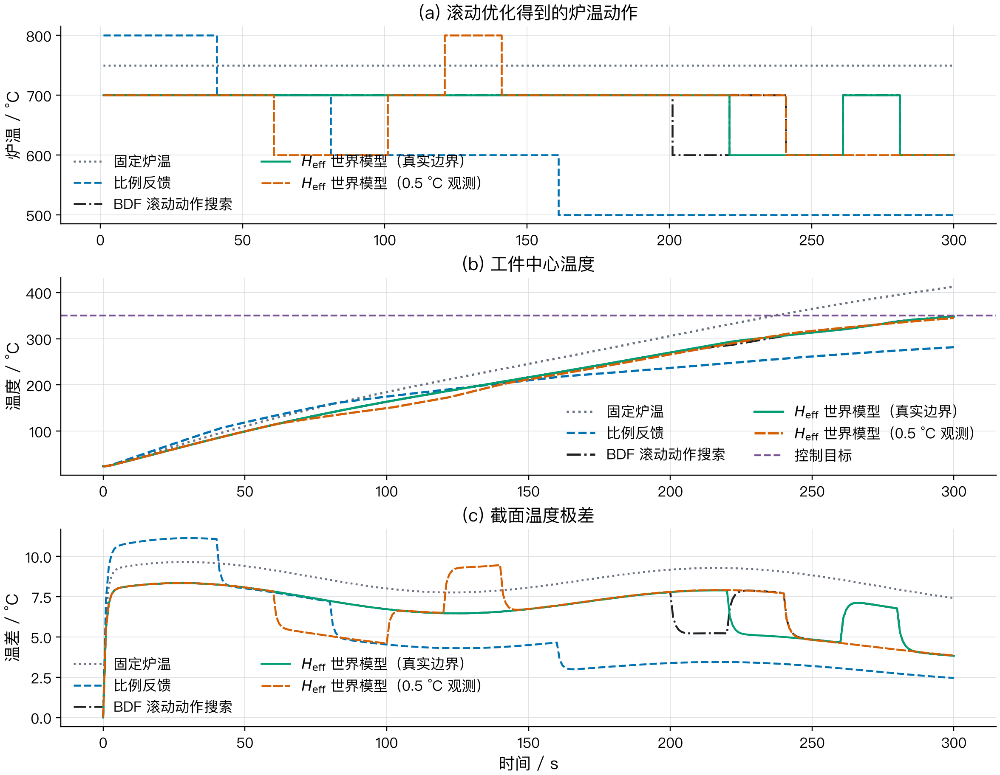
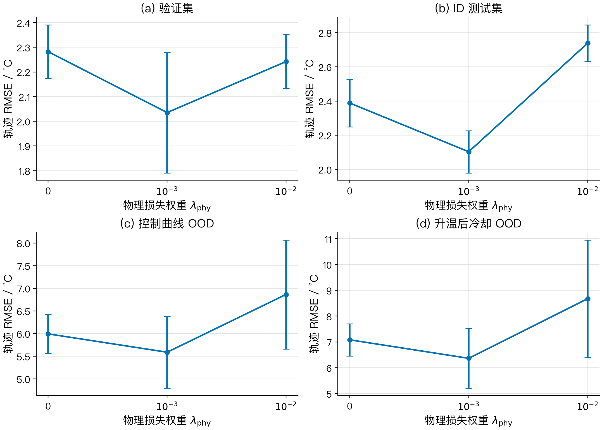
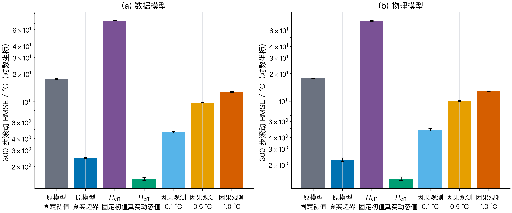
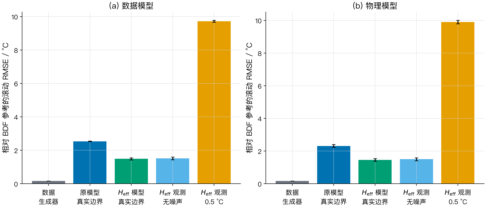
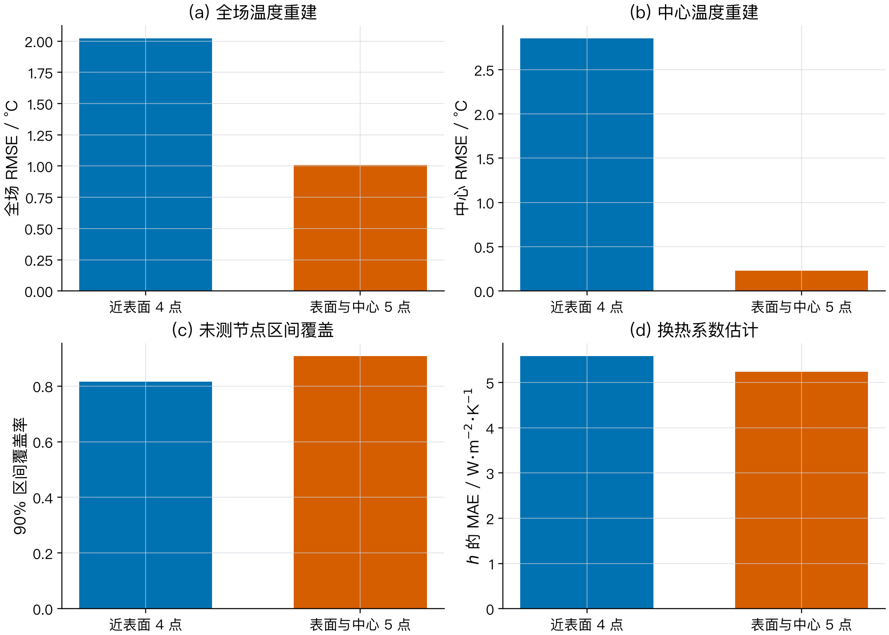
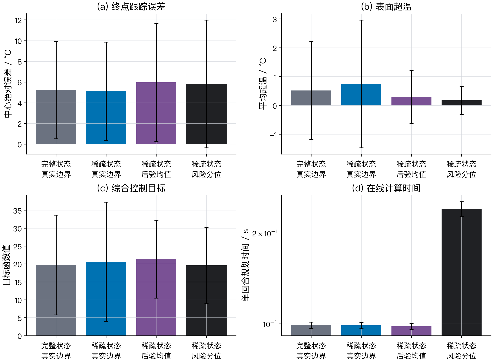

研究什么
炉温动作驱动下，C45 钢内部温度场如何长期演化？
本科毕业论文答辩
把温度场建模为可递归、可观测、可用于反事实动作比较的受控动力学系统

01 · 路线
炉温动作驱动下，C45 钢内部温度场如何长期演化？
动态对流与辐射边界存在局部不可辨识方向。
完整轨迹、三类 OOD、交叉求解器与配对统计。
稀疏测温、集合滤波与滚动炉温动作搜索。
核心贡献集中在可辨识边界表示及其进入状态估计和控制后的完整链路。
02 · 问题定义
“若把炉温调到 700 ℃，未来几十秒工件内部会怎样变化？”
动作条件化、递归推演和反事实规划，使模型具备世界模型的功能定义。
03 · 数值对象
材料C45 / AISI 1045 类中碳钢
状态41 个空间节点，时间步长 1 s
物性温变导热率与经验等效热容
边界对流与灰体辐射共同作用
基准固定步长有限体积与自适应 BDF
350 ℃、300 s 任务用于方法学验证，不对应完整工业热处理制度。
04 · 研究缺口
长期性一步误差小，仍可能在 300 步递推中累积。
分布变化控制曲线、边界参数和物性会超出训练分布。
部分观测内部温度不可完全测量，必须在线校正状态。
05 · 方法总览
世界模型在控制器内部反复回答候选动作的后果。
06 · 预测模型
01五步闭环展开训练时把模型输出继续送回模型。
02离散能量残差内部节点与表面半控制体均纳入。
03轨迹级选择检查点由验证集 300 步 RMSE 决定。
04三随机种子正式结果报告均值与样本标准差。
物理损失服务于能量一致性和外推稳定性，模型选择仍以验证轨迹为准。
07 · 核心贡献
表面热流
对 h 与 ε 的瞬时灵敏度
结论限定在本文单步、均匀灰体、h(t) 与 ε(t) 逐时自由变化的观测模型下。
网络直接接收 Heff，可消除训练输入中的等价方向。
08 · 部署逻辑
已执行动作
当前热流由一个可辨识组合充分描述。
候选动作 a′
辐射项随候选炉温改变，需要 h、ε 的后验成员。
Heff 是单步前向转移的充分输入，不是整个反事实控制问题的充分统计量。
09 · 证据协议
超参数只由验证集选择；测试集和 OOD 集只用于最终评价。
10 · 结果一

11 · 结果二

1.608 ℃ 无噪声因果观测
≈19.4 ℃ 固定使用首时刻边界参数
10.018 ℃ 0.5 ℃ 噪声下的直接差分观测
表示选择解决了输入等价方向；噪声下仍需集合滤波同步校正状态与参数。
12 · 结果三

13 · 结果四

| 测点布局 | 未测节点 RMSE | 中心 RMSE | 90% 覆盖率 |
|---|---|---|---|
| 近表面 4 点 无中心测点 | 2.128 ℃ | 2.854 ℃ | 81.5% |
| 表面与中心 5 点 理想标定场景 | 1.073 ℃ | 0.231 ℃ | 90.8% |
0.231 ℃ 表示中心热电偶参与滤波后的状态一致性，不代表由表面测温推断中心温度。
14 · 结果五
控制器属于常值尾部、单移动阻塞的滚动动作搜索，优化变量少于通用多步序列 MPC。
15 · 结果六

统计结论限定为综合目标的场景配对改善；中心误差区间跨越零。
16 · 结论
以完整温度场、炉温动作和热参数为条件，支持长时递归推演与候选动作比较。
以 Heff 消除瞬时等价方向，并用参数后验连接反事实控制。
集合滤波、世界模型和风险动作搜索在 BDF 数值工件中形成闭环。
17 · 边界
一维对称平板与温变物性
动态对流辐射边界
ID / OOD / 交叉求解器
稀疏测温状态估计与闭环控制
真实测温 热电偶响应与炉温非均匀性
材料过程 相变、组织、应力与变形
复杂几何 二维截面、三维零件与神经算子
混合规划 世界模型筛选，高保真模型复核
交叉求解器验证保证数值证据更稳健，但不替代真实炉体实验。
答辩结束
江景哲 · contact@jiangjingzhe.com
备用 01 · 概念定位
评委可能问：这与普通代理模型有什么区别？
本文所称世界模型，是一个以物理状态、控制输入和系统参数为条件，能够递归预测状态演化并支持反事实规划的可学习动力学模型。
若模型只执行一次前向预测，它可以归入代理动力学模型；本文强调的是闭环中的功能角色。
备用 02 · 数学说明
固定 Ts 与 T∞，表面热流可写为
qs = (h + εhrad)ΔT
灵敏度向量为
∂qs/∂(h,ε) = ΔT[1,hrad]
任取 δε，并令
δh = −hradδε，当前热流保持不变。
映射 (h,ε) → qs 非单射，瞬时 Jacobian 只有一个独立方向。
备用 03 · 复现参数
| 世界模型训练 | |
|---|---|
| 网络 | 3 × 128 residual MLP |
| 激活 | SiLU |
| 优化器 | AdamW |
| 学习率 | 10−3 |
| 批量 / 轮数 | 512 / 120 |
| 展开长度 | K = 5 |
| 物理权重 | 10−3 |
| 集合滤波 | |
|---|---|
| 集合规模 | 64 |
| 测温噪声 | 0.5 ℃ |
| 温度过程噪声 | 0.03 ℃ |
| 集合膨胀 | 1.01 |
| 局部化半径 | 8 节点 |
| h 过程噪声 | 1.0 |
| ε 过程噪声 | 0.004 |
| 滚动动作搜索 | |
|---|---|
| 回合长度 | 300 s |
| 决策间隔 | 20 s |
| 中心目标 | 350 ℃ |
| 候选动作 | 8 个炉温 |
| 尾部假设 | 剩余时域常值 |
| 风险成员 | 16 |
| 风险分位 | 90% |
备用 04 · 统计
每条轨迹先平均 3 个模型种子，再计算物理模型减数据模型的配对差。
每场景先平均 3 个模型种子，再对后验均值与风险分位控制做配对。
bootstrap 估计平均配对差；成功率另报 95% Wilson 区间。
| 结论 | 平均配对差 | 95% 区间 | 论文口径 |
|---|---|---|---|
| 控制 OOD 轨迹 RMSE | −0.220 ℃ | [−0.588, 0.153] | 样本均值趋势 |
| 风险控制综合目标 | −1.737 | [−3.291, −0.226] | 场景配对改善 |
| 风险控制中心误差 | −0.143 ℃ | [−0.720, 0.454] | 不作优势主张 |
备用 05 · 答辩追问
不包含。该数值比较在线候选动作规划，每回合 0.099 s 对 6.258 s。
不同。世界模型 41 节点，BDF 81 节点，所以结论限定为部署配置加速。
属于交叉求解器数值验证。离散方法不同，但连续 PDE 和物性函数相同。
五点布局直接含中心热电偶，因此主重建证据采用无中心四点方案。
它改变优化目标。本文依据验证轨迹选择权重，优势集中在物理一致性和参数组合外推。
用热电偶实测曲线校准边界、物性和传感器响应，并扩展到二维截面。